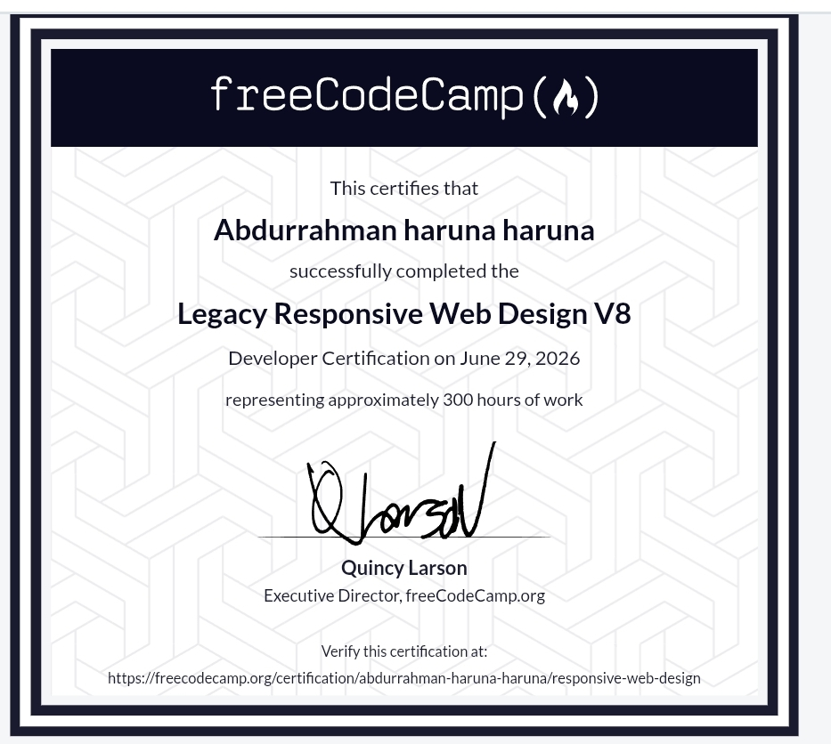

Software Architecture & Web Systems
Developing robust backends, semantic web interfaces, and responsive software solutions.
Professional Profile
I am Abdurrahman, a software engineering student driven by structural logic, technical optimization, and pristine codebase management. I focus on reducing programmatic complexity to deliver clean, scalable web applications.
Currently deep within my 200 Level curriculum in Software Engineering at Northwest University, Kano (YUMSUK), I am dedicating my focus toward mastering object-oriented paradigms, algorithmic optimization, data safety standards, and reliable structural workflows.
Academic Framework
B.Sc. Software Engineering
Active EnrollmentNorthwest University, Kano
Current Level 200 Student
Actively specializing in relational database structure design, asynchronous backend workflows, algorithm construction patterns, and robust software architecture models.
Core Competencies
An accurate metric measurement of practical technical confidence across foundational engineering layers, omitting generic graphic labels.
System Implementations
Unified Single-Page Production Portfolio
Vanilla Architecture / Native DOM Scripts / Clean Layout Structuring
My primary live engineering release. Handcrafted completely from scratch without third-party layout engines or frameworks, this application incorporates dynamic routing scripts, multi-device adaptive layout constraints, and clean, readable typographic scaling.
Verified Certifications

Responsive Web Design Certification
Issued by freeCodeCamp Global Registry
Rigorous practical curriculum validating deep knowledge of layout fluidity, screen grid mechanics, semantic accessibility parameters, and responsive style optimization strategies.
Launch Live Verification LinkInfrastructure Ecosystem
GitHub
Vercel
Netlify
Render
Engineering Manifesto
"Excellence in software development lies in building predictable systems. Clean, explicit code logic and semantic architectural layouts will always remain superior to ephemeral design trends."
I structure my software projects with a strong focus on clear maintainability and rapid asset delivery speeds. Every program file, markup node, and design property is written with intent, ensuring optimized performance right from execution.
Strategic Growth Objectives
Engineer secure, scalable web API layers and robust backend execution engines utilizing optimized Node.js platforms.
Implement secure database mapping architectures to coordinate continuous, high-speed application data transactions.
Contribute open-source assets aimed at maximizing web interface accessibility speeds across regional mobile networks.
Initiate Connection
Available for technical software alignments, application builds, and system engine collaborations.